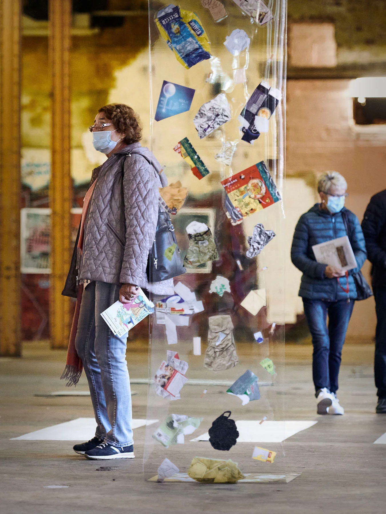
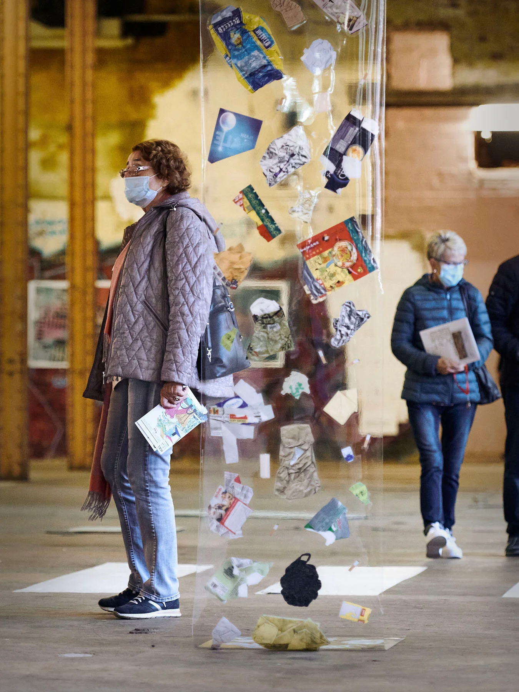

Seven Stories of Mellonopolis, 2022
The Future of Cities. Not for Granted, Halle 14, Leipzig, Germany In collaboration with Studio Forage Photography by Walther LeKon
Seven Stories of Mellonopolis is a project that was first presented in Shenzhen, China, in early 2020 at the Bi-City Biennale of Urbanism/Architecture. The project introduces Mellonopolis, a fictional, near future city. Using real examples from around the world, Mellonopolis acts as a vessel to describe potential technologies that might alter how we live in urban environments. Through a series of esoteric citizen interventions, we hope to shed light on the absurd technocratic ambitions of the smart city.
The installations presented here are a selection of three of the stories from Mellonopolis which explore image recognition technologies. Each intervention introduces a citizen with a particular agenda that conflicts with the smart city, imagining how they may develop cunning methods and behaviours to subvert this technology.
This is neither a grand utopian or dystopian vision of the future. Instead, it is a portrait of the banal, everyday reality of how ordinary people with regular human quirks might find ways to get what they want in a city augmented with sophisticated, yet ultimately flawed, artificial intelligence.
From pretending to be a child to cross the road quicker to disguising pigeons, we invite you to meet the residents of Mellonopolis and discover their mischievous relationship to the smart city of the not too distant future.
I was invited by Studio Forage to collaborate in exhibiting Seven Stories of Mellonopolis at The Future of Cities. Not for Granted group show at Halle 14 Leipzig. I contributed two works generated using machine learning: a film, and a series of images of children’s faces that were printed on t-shirts.Australia – and crocheting an orange for each visitor.


 
